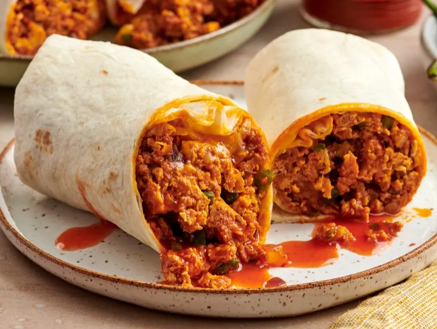

Home
Chorizo Breakfast Burrito

Source : https://www.allrecipes.com/recipe/76464/chorizo-breakfast-burritos/
Description
This breakfast burrito with chorizo sausage is great when you're craving
greasy, yummy breakfast food (i.e., when you're hungover)!
Ingredients
- cooking spray
- ¾ pound chorizo sausage, casings removed and crumbled
- ½ cup chopped red onion
- 1 green chile pepper, seeded and diced
- 4 large eggs
- 4 flour tortillas
- 1 cup shredded Cheddar cheese
Steps
-
Generously coat a large frying pan with cooking spray. Cook and stir
chorizo in the prepared pan over medium-high heat until well browned and
crumbled. Add onion and chile pepper; continue cooking, stirring
occasionally, until onion is tender.
-
Beat eggs in a medium bowl and add to chorizo mixture. Reduce heat to
medium-low; continue cooking and stirring until eggs are scrambled and
no longer runny.
-
Warm flour tortillas in the microwave for 30 seconds. Spoon chorizo-egg
mixture into the middle of each tortilla and top with shredded Cheddar
cheese. Roll up like a burrito.